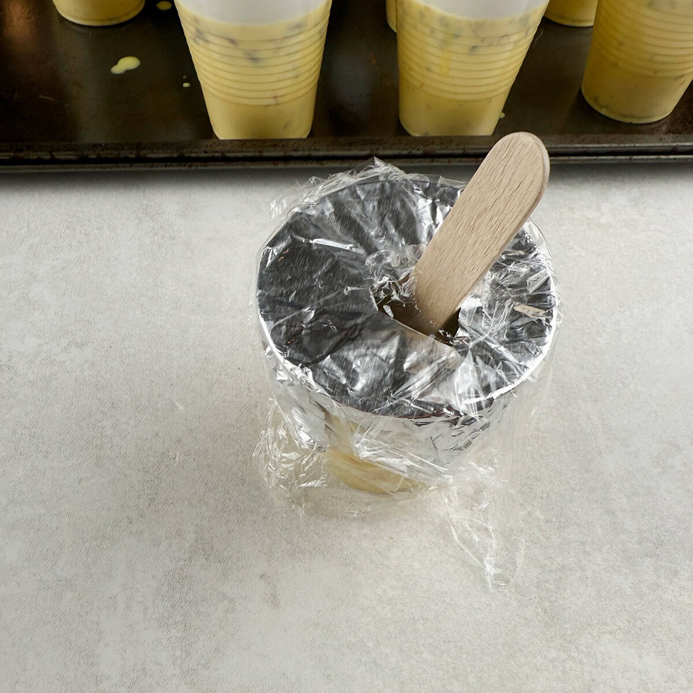

Ingredients

- 14 oz sweetened condensed milk
- 12 oz evaporated milk
- 16 oz heavy whipping cream
- 16 oz cool whip topping
- 1 big pinch kesar (saffron)
- 1 tsp sugar
- 1/2 cup cashews, pistachios, and almonds (coarsely ground)
Instructions
- Grind together sugar and saffron with a mortar and pestle.
- In a large mixing bowl, combine sweetened condensed milk, evaporated milk, heavy whipping cream, and cool whip.
- Using a hand blender (or by hand), gently mix all ingredients together.
- Add sugar and saffron mixture and nuts; mix well.
- Pour mixture into small Dixie style plastic cups; cover cups with foil and insert a wooden popsicle stick into the center.
- Freeze kulfi for at least 4-6 hours, preferably overnight.